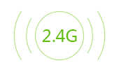

第1步：设置接入互联网的方式
已连网
宽带拨号
宽带拨号
动态IP
静态IP
高级设置
MAC地址克隆:
不克隆
不克隆
克隆当前设备的MAC地址
使用出厂MAC地址
手动输入MAC地址
当前路由MAC地址:
自定义DNS
必填
选填
下一步
跳过
未连网，WAN口未插入网线。
连网类型
请输入宽带账号
请输入宽带密码
下一步
跳过
第2步：设置Wi-Fi名称和密码
您的手机、笔记本等无线设备可通过本Wi-Fi连接互联网
WiFi名称：
WiFi密码：
路由宝管理密码和Wi-Fi密码相同
管理密码：
保 存
上一步
恭喜！您已完成路由宝配置！

本设备已和路由宝断开连接
请重新连接到Wi-Fi：
立即体验
连网成功
正在连网
已重启网络服务，请重新连接WiFi...
确定
已生效，正在重启（10秒）...